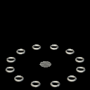

Unlike Dark Elven and Accursed traps, Sylvan traps are not primarily offensive. In fact, the only truly offensive Sylvan "trap" is a completely natural plant that the Sylvans cultivate for military use.
|
The Gas Blossom is a naturally occurring plant indigenous to some of the swampier areas of Sylvan territory. This plant has limited sensory capability, and as part of its natural defenses, shoots out a cloud of corrosive gas when it senses its natural predators nearby. In its original form, the Gas Blossom was hardly usable as a trap -- after all, the gas it emitted was only a mild irritant, and the Blossom didn't grow outside the swamp. However, after years of careful breeding, the Sylvans have cultivated a Gas Blossom that not only can grow outside the swamp, but emits the corrosive gas in now-fatal concentrations. Although a Gas Blossom could theoretically emit enormous amounts of gas over its lifetime, it only possesses a limited store, and doesn't regenerate in a time frame that is useful to a battle. |
| The Spirit Eye is a tiny plant spirit, which Faeries can draw into the world at will. Once summoned, these spirits watch over an area, and telepathically communicate what they see to other Sylvan forces. Spirit Eyes are used in large quantities to help bolster Sylvan reconnaissance. |
|  | Although the Hidden Teleporter doesn't actually cause damage to enemy forces, it is one of the most feared traps that the Sylvans deploy. When enemy units step onto a Hidden Teleporter, they are instantly whisked off to a predetermined location nearby. Often, Teleporters are configured to help split up enemy forces, by whisking some out of the battle, allowing the Sylvans to divide and conquer their foes. Other times, clever Wardens will configure Teleporters to send enemy troops right into tactically weak (read: deadly) positions, such as being surrounded by dozens of Rangers and several Weatherstones. |
Strifeshadow, Ethermoon Entertainment and their respective logos are trademarks of Martin Snyder